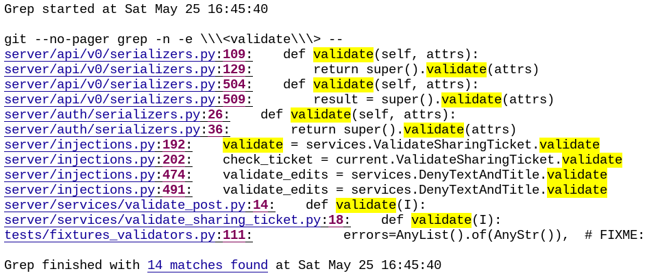

Keeping Software Soft
Artem Malyshev
BIO
- Co-Founder at drylabs.io
- dry-python.org
- Django Channels 1.0
- 5 years of experience in Python
Implicit API
class SubscriptionViewSet(viewsets.ModelViewSet):
queryset = Subscription.objects.all()
serializer_class = SubscriptionSerializer
permission_classes = (CanSubscribe,)
filter_class = SubscriptionFilter- What exactly does this class do?
- How to use it?
from google_cloud_messaging import send_message
@signal
def send_sms(event):
text = 'A new subscription was made'
on_commit(lambda: send_message(text))Grep test
Framework Lifecycle API

Scenario: Publishing the article
Given I'm an author user
And I have an article
When I go to the article page@given('I am an author user')
def author_user(auth, author):
auth['user'] = author.user
@given('I have an article')
def article(author):
return create_test_article(author=author)
@when('I go to the article page')
def go_to_article(article, browser):
browser.visit(f'/manage/articles/{article.id}/')spring nest-js dry-rb dry-python